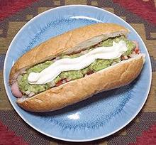

Completo Versions

All these versions are based on a split bun with a Salchica (hot dog) in the
bottom - except the Luco, Jarpo, and As, where the sausage is replaced
by grilled meats. The toppings given here may vary slightly, but mostly in
amount and arrangement. The ingredient are listed in order of applcation.
For a complete build of the most standard Completo (completo-completo) see our
page Completo - Chilean Hot Dog.
Here we list versions that have wide usage. There are also many
regional versions that are not listed here.
Completo:
sauerkraut, tomato, chopped onion, avocado,
mayonnaise
Italiano:
colors of Italian flag - diced tomatoes, avocado,
mayonnaise
Dinámico:
sauerkraut, tomatoes,
Salsa Americana,
Salsa Verde, avocado,
mayonnaise.
Chacarero:
named after the popular Churrasco sandwich
- tomato, green beans (sliced and cooked soft), green chili
Falso:
Vegetarian all Completo toppings but no hot dog.
Tomata Mayo"
Tomato, Mayonnaise.
A lo Pobre:
named for a sandwich Churrasco a lo pobre
often fvored by lower class workers - fried onion, fried eggs
Alemán:
(German) sauerkraut, tomato, mayonnaise
Brasileño:
colors of Brazilian flag - melted cheese,
avocado
Atómico:
sauerkraut, tomato,
Salsa Americana,
hot chili sauce, avocado, mayonnaise.
Gringo:
tomato, lettuce, cucumber, onion, mayonnaise
Chemilico:
scrambled eggs
Español:
named for colors of Spanish flag - pancetta, red chili,
melted cheese
Turco:
scrambled eggs, melted cheese
Rodeo:
melted cheese, bacon, BBQ sauce,
Irlandés:
lettuce, tomato, mayonnaise
Napolitano:
tomato, oregano, melted cheese, sliced black
olives.
Indio:
grated carrot, ají amarillo (moderately hot
chili), curry, avocado, mayonnaise
Suizo:
Tomato and Melted Swiss Cheese.
----------------
Luco:
named for Barros Luco sandwich - coarsely
chopped roasted beef instead of hot dog, melted cheese.
Jarpa:
named for Barros Jarpa sandwich - chopped grilled ham
instead of hot dog, melted cheese
As:
Grilled meat instead of hot dog, tomato, avocado,
mayonnaise.